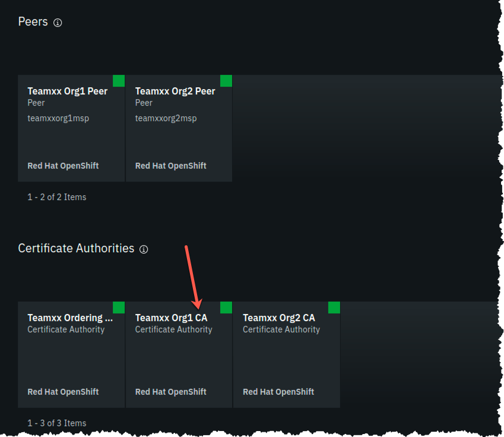
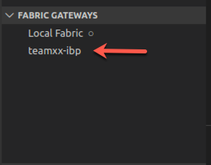
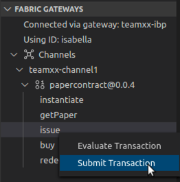

IBM Blockchain Platform for Multicloud Part 2 - Deploying a Smart Contract
This lab will walk you through deploying the smart contract that you worked with from the VSCode labs: namely commercial-paper. This lab assumes that you have successfully completed the IBM Blockchain Platform for Multicloud Part 1 - Deploying a blockchain network lab. If you have not completed part 1, you must do so before continuing with this lab.
Section 1: Export Commercial Paper Smart Contract
Remember from the VSCode labs, you have already packaged up the commercial paper (papercontract@0.0.4) smart contract. Now you will export the contract to its own smart contract package (in .cds format) and deploy it to your IBM Blockchain Platform network.
Note
If you did not complete the VSCode labs, you can still continue with this lab. You need to download the .cds package here: commercial-paper and save it to your lab image under the /home/tecadmin/ directory. Then you can skip to Section 2 of this lab.
1. Go back to your VSCode editor, and go to the IBM Blockchain Platform Extension view. Under the Smart Contract Packages panel, right-click on papercontract@0.0.4 and select Export Package:

2. Select the location /home/tecadmin/, and click Enter. Upon successful exporting, you will see a message like below:

Section 2: Install Paper Contract to your Blockchain Network
1. Go back to your IBM Blockchain Platform Console at your assigned URL:port. Go to the Smart Contracts panel, and select Install Smart Contract:

2. In the Install Smart Contract side panel, upload the papercontract@0.0.4.cds package (from the location /home/tecadmin), and click Next.

3. Now select both peers to install to and press Install Smart Contract. Note this is not a very realistic situation because we are installing to peers from two separate organizations. In reality, the smart contract would be shared in a private Github repo with members of the blockchain network and each organization would install the smart contract to their own peers through their console.

4. Now, you should see papercontract appear in the Installed Smart Contracts panel.

Section 3: Instantiate Paper Contract
1. From the Smart Contracts - Installed Smart Contracts panel, select the three dots to the right of papercontract and select Instantiate:

2. In the Instantiate smart contract side panel, select teamXX-channel1 as the channel to instantiate to:

3. In the next side panel, select both members to endorse transactions. And then select 1 out of 2 members need to endorse transactions.

4. In the next side panel, select TeamXX Peer Org1 as the peer to approve proposals for instantiating the smart contract.
5. In the next side panel, skip adding a private data collection and just hit Next.

6. In the next panel, leave the function name blank (it will by default call the init function in the smart contract which is what we want for papercontract) And leave the arguments box blank. Simply select the Instantiate smart contract button.

7. First time initiation could take a while because the Node smart contract is pulling in all the package dependencies from the NPM registry. After a few minutes, instantiation should complete. If you scroll down on the Smart Contracts panel, you will see the list of Instantiated Smart Contracts now includes papercontract:

Now that you have the smart contract instantiated on the channel, you are ready to move on to the next step.
Section 6: Register client user for TeamXX Org1
Now you need to register a client user to use to enroll application identities for Org1. In real life, as the blockchain network administrator for your organization, you might want to register a distinct client user for each business application that has a need to access the smart contract. In this case, the same client user is used to enroll a number of application identities. Another development pattern is to register a distinct client user for each distinct application identity. You can register a client user through the Fabric application SDK as well, though that is not covered in this lab.
1. Go to the Nodes view on your IBM Blockchain Platform Console, and navigate to the Certificate Authorities section. Then select TeamXX Org1 CA:

2. In the TeamXX Org1 CA view, select Register user:

3. In the Register User side panel, fill in the following fields for the user, then hit Next:

4. In the next panel, just press Next:

5. Now you should see the app-admin user you added show up under Registered users:

Section 7: Register client user for TeamXX Org2 (Optional)
Now we will register a client user for enrolling application identities for Org2. This section is optional. In the sections that follow, you will only connect to Org1's peer and invoke transactions against that endpoint. You will only need to register client user for Org2 if you wish to connect to Org2's peer.
1. Go to the Nodes view on your IBM Blockchain Platform Console, and navigate to the Certificate Authorities section. Then select TeamXX Org2 CA:

2. Follow the same steps from Section 6, 2-5, in order to register a client user for Org2.
Section 8: Download the connection profile to connect to TeamXX Org1 Peer
The connection profile is a .JSON file that describes all the connection endpoints, MSP information, channel information and certification information required to connect to your organization's peer. A client application wishing to invoke transactions against a smart contract would require this file to obtain the necessary information needed to make that connection. Without IBM Blockchain Platform, this is a file you would put together yourself using existing sample connection profiles available in the Hyperledger Fabric community. With the IBM Blockchain Platform, you can download a ready-made file from the IBM Blockchain Platform Console.
1. Go to the Smart Contracts view from the Console menu on the left. Scroll down to the Instantiated Contracts section. Click on the three dots to the right of papercontract and select Connect with SDK:

3. In the Connect with SDK side panel, you want to select the following (Remember to replace the XX below with your team number):
MSP for connection: teamXXorg1msp
Certificate Authority: TeamXX Org1 CA
And then click on Download connection profile button at the bottom. Then you can click on Close.
Section 9: Create a new Gateway in VSCode IBM Blockchain Platform Extension
Now you can use that connection profile to create a new gateway in VSCode IBM Blockchain Platform Extension.
1. In the VSCode IBM Blockchain Platform view, click on the + in the Fabric Gateways panel (if you are still connected to your local gateway you will need to disconnect from this gateway first. You can do so by clicking on the door icon where the + should be):

2. Then in the pop-up window at the top of VSCode, select Create a gateway from a connection profile:

3. Next you will be asked to enter the name of the gateway. Enter teamXX-ibp, remembering to replace XX with your team number.
4. Finally, you will be asked to browse to the connection profile that you downloaded from Section 8. Browse to it, and select Open.
5. Upon success, you will see the teamXX-ibp show up in the Fabric Gateways panel as follows:
Section 10: Create a new wallet and identity in VSCode IBM Blockchain Platform Extension
1. In the VSCode IBM Blockchain Platform view, click on the + in the Fabric Wallets panel:

2. Select create a new wallet and add an identity in the pop-up window:

3. Enter teamXX-wallet in the next pop-up window:

4. Enter isabella as the name for the identity:

5. Enter teamXXorg1msp as the MSPID (important to replace the xx with your team number)

6. Pick Select a gateway and provide an enrollment ID and secret

7. Choose teamXX-ibp as the gateway you want to enroll and identity with:

8. Type app-admin as the enrollment ID:

9. Type app-adminpw as the enrollment secret:

10. Upon success you will see the new wallet and identity in the Fabric Wallets panel:

Section 11: Connect to the teamXX-ibp gateway
Now that you have created a wallet and enrolled an ID and password, you are ready to connect to the teamXX-ibp gateway.
1. Click on the teamXX-ibp in the `Fabric Gateways panel.

2. In the pop-up window, select teamXX-wallet.

3. Upon success, you will also see your new gateway represented in the Fabric Gateways panel. Expand the twisties until you see your papercontract transactions:

Section 12: Issue a transaction to test the connection
Now we are ready to submit a test transaction.
1. From the Fabric Gateways panel, expand into the papercontract@0.0.4 contract, right-click on the issue transaction and select Submit Transaction:

2. Copy and paste the following inside the brackets as the argument:
"MagnetoCorp","00002","2020-07-31","2020-12-31","6000000"
Example:

3. Hit Enter on the transient data pop-up window.
4. Upon success you will see the results from the issue transaction in the OUTPUT panel in VSCode:
[9/24/2019 10:49:57 PM] [INFO] submitTransaction
[9/24/2019 10:51:08 PM] [INFO] submitting transaction issue with args MagnetoCorp,00002,2020-07-31,2020-12-31,6000000
[9/24/2019 10:51:11 PM] [SUCCESS] Returned value from issue: {"class":"org.papernet.commercialpaper","key":"\"MagnetoCorp\":\"00002\"","currentState":1,"issuer":"MagnetoCorp","paperNumber":"00002","issueDateTime":"2020-07-31","maturityDateTime":"2020-12-31","faceValue":"6000000","owner":"MagnetoCorp"}
5. Now, return to the IBM Blockchain Platform console at your assigned URL. Go to the Channels view, and click on the teamXX-channel1 tile.

6. You should see the block height at 8. Now scroll down to Block History section, and click on the block at the top of the table.

7. Now you will see a list of transactions in block #7. Click on the top most transaction (there should only be one):

8. In the side panel you should see the issue transaction that you just submitted via the VSCode IBM Blockchain Platform Extension.

9. OPTIONAL: you can submit additional transactions through VSCode, and watch the block height increase and look at the transaction in the IBM Blockchain Platform Console.
Congratulations!! You've now successfully enrolled an application identity and used it to invoke transactions against a smart contract deployed to IBM Blockchain Platform.